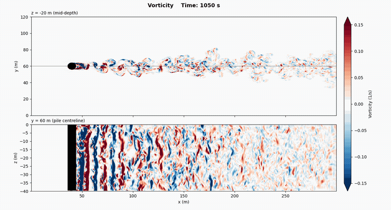
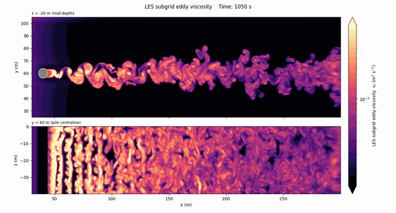

Results · 6–8/9
Flow Visualizations
Three short clips and a map capture the wake at Re = 4×10⁶.
Vorticity
Vorticity contours reveal alternating vortex shedding behind the cylinder and the wake's downstream transition into increasingly complex turbulent structures.

Speed
Speed fields reveal a low-velocity wake behind the cylinder and its gradual recovery as the flow moves downstream.

Viscosity
Viscosity fields highlight regions of enhanced modeled turbulent mixing as vortices form and evolve throughout the wake.
